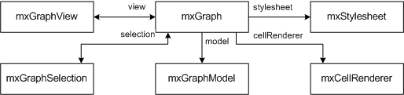
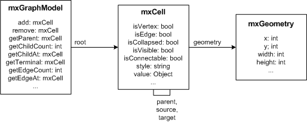
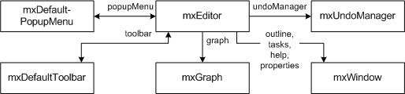

The mxGraph package contains a client software, written in JavaScript, and a series of backends for various languages. The client software is a graph component with an optional application wrapper that is integrated into an existing web interface. The client requires a webserver to deliver the required files to the client or can be run from the local filesystem without a webserver. The backends may be used as is, or they may be embedded into an existing server application in one of the supported languages.

If a backend exists, then the client may be configured to use this backend in various ways, such as:
The above scenarios maybe combined in various ways, such as sending an XML description of each change to the backend as it happens, or autosaving of the diagram to avoid loss of data on the client. The client can also operate in offline mode, where it does not require a backend or a webserver.
Please have a look at the index files in the respective directories for information on the various backends.
The Hello, World! example of mxGraph ships in a single HTML file, which contains the required namespaces, the mxGraph library script and the example code. The example can be viewed by pointing Firefox or Internet Explorer to the link above either on the local filesystem or on a webserver. To display the source of the example press Control-U in Firefox or click Page, View Source in Internet Explorer.
The HEAD part of the page contains the JavaScript code and dependencies.
The library is loaded using the following code. The mxBasePath
variable is used to define the path where the library loads its resources
from. This variable must be defined prior to loading the library code and
should not include a trailing slash.
<script type="text/javascript"> mxBasePath = 'javascript/src'; </script> <script type="text/javascript" src="javascript/src/js/mxClient.js"></script>
mxClient.js contains all required code in a single file. Note
that the source code only ships with the commercial distributions. In the
evaluation version, the source code is loaded from a server using a special
URL. You should not make local copies of the evaluation source code.
The next script tag in the HEAD part of the page contains the Hello, World! example code. The first part of the code checks if the browser that is displaying the page is supported by the library. It is recommended to do this as the first step of the program and display an error message if the browser is not supported. In your document you may also want to include a NOSCRIPT directive for browsers that have JavaScript disabled, however, in our examples this directive is not used.
There is no convention for the name of the main function. The function
is invoked from the onload handler in the page and may have any name
and arguments. In this case, the argument is a DOM node that will contain
the graph. Note that the DOM node may have any ID and that the code
is independent of this ID.
<script type="text/javascript";>
function main(container)
{
// Checks if the browser is supported
if (!mxClient.isBrowserSupported())
{
// Displays an error message if the browser is not supported.
mxUtils.error('Browser is not supported!', 200, false);
}
...
For the JavaScript to actually render the graph, the page
contains an DOM node which will display the graph. This
DOM node is either dynamically created or it is obtained via
an ID using document.getElementById as in the
Hello, World! example. The DOM node is passed to the main
function and is used to construct the graph instance as shown
below.
If you want the container to have scrollbars, use the overflow:auto CSS directive instead of overflow:hidden in the style of the container.
The code constructs an empty graph model and passes the container and the empty model to the graph constructor. For this example, all default event handling is disabled in the last line.
var model = new mxGraphModel(); var graph = new mxGraph(container, model);
If you want the graph to be read-only you can use graph.setEnabled(false).
To insert vertices and edges, beginUpdate and endUpdate
are used to create a transaction. The endUpdate should always go
into a finally-block to make sure it is always executed if the beginUpdate
was executed. However, the beginUpdate should not be part of the
try-block to make sure endUpdate is never executed if beginUpdate
fails. This is required for the model to remain in a consistent state, that is, for
each call to beginUpdate there should always be exactly one call to
endUpdate.
The part within the try-block creates the vertices and edges for the graph. The default parent is obtained from the graph and is typically the first child of the root cell in the model, which is created automatically when using the graph model c'tor with no arguments.
// Gets the default parent for inserting new cells. This
// is normally the first child of the root (ie. layer 0).
var parent = graph.getDefaultParent();
// Adds cells to the model in a single step
model.beginUpdate();
try
{
var v1 = graph.insertVertex(parent, null, 'Hello,', 20, 20, 80, 30);
var v2 = graph.insertVertex(parent, null, 'World!', 200, 150, 80, 30);
var e1 = graph.insertEdge(parent, null, '', v1, v2);
}
finally
{
// Updates the display
model.endUpdate();
}
The use of beginUpdate and endUpdate does not
only improve the display performance, but it is also used to mark the
boundaries for undoable changes when undo/redo is used.
Instantiate mxGraph in order to create a graph. This is the central class in the API. Everything else is auxiliary.
To create a new graph instance, a DOM node (typically a DIV) is required:
var node = document.getElementById('id-of-graph-container');
var graph = new mxGraph(node);
mxCell defines the elements of the graph model, which is implemented by mxGraphModel.
The graph model has the following properties:
The graph and structural information is stored in the cells, as well as the user objects, which are used to store the value associated with the cells (aka business objects).
To create a new graph model with a root cell and a default layer (first child):
var root = new mxCell(); root.insert(new mxCell()); var model = new mxGraphModel(root);
The appearance of the cells in a graph is defined by the stylesheet, which is an instance of mxStylesheet. The stylesheet maps from stylenames to styles. A style is an array of key, value pairs to be used with the cells. The keys are defined in mxConstants and the values may be strings and numbers or JavaScript objects or functions.
To modify the default styles for vertices and edges in an existing graph:
var vertexStyle = graph.getStylesheet().getDefaultVertexStyle(); vertexStyle[mxConstants.ROUNDED] = true; var edgeStyle = graph.getStylesheet().getDefaultEdgeStyle(); edgeStyle[mxConstants.STYLE_EDGE] = mxEdgeStyle.TopToBottom;
The style information for a cell is stored in cell.style.
The style is part of the cell's state and is normally changed via
mxGraphModel.setStyle, which will update all views.
The cell style is a string of the form
[stylename;|key=value;]
which tells the graph to use the given named styles and override the specified key, value pairs in the given order. For example, to use the rounded style and override the stroke- and fillColor, the style would be defined as:
rounded;strokeColor=red;fillColor=green
To use the above in Hello, World!, the stylename would be passed to the insertVertex method as follows:
var v1 = graph.insertVertex(parent, null, 'Hello', 20, 20, 80, 30, 'rounded;strokeColor=red;fillColor=green');
In certain cases you may want to override specific attributes based on
dynamic properties of a cell (ie. it's value, aka. userobject), such as
the image, indicator shape, -image, -color or -gradient color), in
which case you can override getImage,
getIndicatorShape, getIndicatorImage,
getIndicatorColor and getIndicatorGradientColor
respectively. Note that these methods take a cell state as an argument,
which points to a "resolved" (that is, an array) version of the
cell's style. Hence, the default implementation for getImage
looks as follows:
mxGraph.prototype.getImage = function(state)
{
if (state != null && state.style != null)
{
return state.style[mxConstants.STYLE_IMAGE];
}
return null;
}
This method may be overridden to return any image for the given state.
Typically, the image is defined by either state.cell,
which points to the graph cell associated with the state, or by
state.cell.value, which refers to the cell's user object.
Due to the nature of the display, where all cells are created once and
updated only if the model fires a notification for a change, you must
invoke view.invalidate(cell) for each cell who's image
has changed, and call view.validate to update the display.
Instantiate mxEditor in order to create an editor. This is the central class in the editor package. Everything else in this package is auxiliary. To create a new editor instance and configure it using a config file, you can pass the name of the config file to the mxEditor constructor.
To create a new editor instance and configure it, the following code is used:
var config = mxUtils.load('editors/config/keyhandler-commons.xml').getDocumentElement();
var editor = new mxEditor(config);
The configuration file is an XML file that is passed to mxCodec, which in turn uses mxEditorCodec and others to read the XML into the editor object hierarchy. This is normally done at startup time to configure the editor, graph, model, toolbar, popupmenus etc using the I/O subsystem.
The CSS stylesheet contains the style definitions for various elements of the user interface, such as the rubberband selection, the in-place editor or the popup menu. It also contains the directives required to enable VML support in Internet Explorer, so it is substantial that the stylesheet is included in the page.
Additional stylesheets may either be added programmatically using
mxClient.link('stylesheet', filename) or
via a stylesheet tag of the UI section in the editor configuration, eg.:
<mxEditor>
<ui>
<stylesheet name="examples/editors/css/process.css"/>
...
To add new cell types, create a template in the templates array section of the model in the config file (mxEditor/mxGraph/mxGraphModel/Array[as=templates]) as follows:
<add as="symbol">
<Symbol label="Symbol" customAttribute="whatever">
<mxCell vertex="1" connectable="1" style="symbol;image=images/event.png">
<mxGeometry as="geometry" width="32" height="32"/>
</mxCell>
<CustomChild customAttribute="whatever"/>
</Symbol>
</add>
The as-attribute of the add-element contains the
name under which the template will be accessible for later use. The
Symbol-child element is a custom (ie workflow) element, and
can have any name and any number of child elements and custom attributes.
The label attribute is a special one that is used for the textual
representation of the cell in the graph. The mxCell element
is another special child node which contains the graphical information for
the cell, namely, the cell-type, -style, -size and -position.
See mxGraph.convertValueToString if you would like to use another
attribute or a combination of attributes for the textual representation,
and mxCell.valueChanged to handle in-place editing by storing
the new text value in the respective attribute(s).
To use the template in the graph, a toolbar item must be added which refers to the template in the mxDefaultToolbar section of the config file (mxEditor/mxDefaultToolbar[as=toolbar]) as follows:
<add as="symbolTool" template="symbol" style="symbol;image=wf/images/bpmn/special_event.png" icon="wf/images/bpmn/small_event.gif"/>
The as attribute specifies the tooltip to be displayed for the
icon in the toolbar, the template-attribute refers to the name
under which the template was previously added. The style-
attribute is optional, and may be used to override the style defined in the
template definition. Finally, the icon specifies the icon to be used for the
toolbar item.
Note that the as attribute is assumed to be the key for a language
resource, in this case symbolTool. If the resource is not defined
in mxResources, then the
attribute value is used as the label.
The default encoding scheme maps all non-object fields to string attributes and all object fields to child nodes, using the constructor name of the object as the nodename and the fieldname for the as-attribute value. This default encoding scheme may be overridden by custom codecs, which are registered in the mxCodecRegistry.
For example, consider the following JavaScript object definition:
var object = new Object(); object.myBool = true; object.myObject = new Object(); object.myObject.name = 'Test'; object.myArray = ['a', ['b', 'c'], 'd'];
To encode this object and show the resulting XML in a new window, the following code is used:
var encoder = new mxCodec(); var node = encoder.encode(object); mxUtils.popup(mxUtils.getXml(node));
And here is the XML structure that represents the object:
<Object myBool="1">
<Object name="Test" as="myObject"/>
<Array as="myArray">
<add value="a"/>
<Array>
<add value="b"/>
<add value="c"/>
</Array>
<add value="d"/>
</Array>
</Object>
Note that the codecs will turn booleans into numeric values, no
array indices are stored if they are numeric and non-object
array members are stored inside the value-attribute.
Furthermore one may include other XML files by
use of the include directive in the XML structures.
The save, open, readGraphModel and writeGraphModel functions implement a standard mechanism for handling files in mxEditor.
The default implementation of mxEditor.save is called
with an argument to indicate if the save was triggered by the user or
by the system. It then uses the urlPost variable of
the editor object to check if a post request should be issued. If
the variable is defined, the editor issues a post request to the
specified URL passing the XML along as a POST variable called xml.
As an example, consider the following PHP file which is located in the same directory as the HTML page. If the filename is server.php then the urlPost variable must be set to server.php on the editor in order to post the diagram to the server. The PHP file will get the XML from the POSt request and write it to a file called diagram.xml.
<?php
$xml = $HTTP_POST_VARS['xml'];
if ($xml != null) {
$fh=fopen("diagram.xml","w");
fputs($fh, stripslashes($xml));
fclose($fh);
}
?>
To set the URL to post to, change the respective entry in the mxEditor node of the config file as follows:
<mxEditor urlPost="http://www.example.com/server.php" ... >
Keep in mind that the JavaScript can only post to the server where it originated from, so we recommend to use relative URLs, eg. server.php.
If you need to read/write the graph from/to a string (eg. to fill a form-field), you can use the following methods:
var data = editor.writeGraphModel(); editor.readGraphModel(mxUtils.parseXml(data));
For encoding other objects, or if no editor instance is available, the mxCodec can be used to create and read XML data.